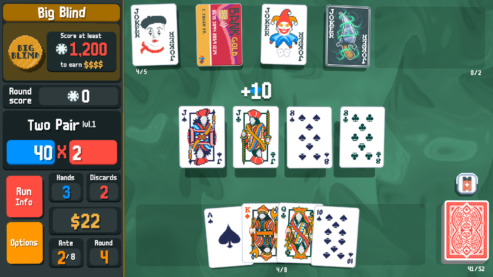

The Rise of Independent Game Development
Creativity with no limits
Indie game development is by no means an easy achievement. It takes constant trial and error for an indie developer to create a game and make it successful. Indie is short for independent, which describes developers who create games independently of large game studios. Indie games are often made by smaller teams compared to AAA games, which are typically developed by larger studios with bigger budgets. What makes indie development so challenging? As mentioned previously, it takes constant trial and error to figure out what makes a game appeal to its target audience. While AAA studios often have larger teams and more resources, many indie developers start with limited resources and have to build their games from the ground up. Game development also requires more than just coding; it involves creating music and artwork, as well as marketing the finished product. For an indie game to become successful, all these elements need to come together. However, having a smaller team can also give developers more freedom to experiment with unique ideas and create games that stand out from the crowd.
Small Team, Great Passion

Over the years, indie games have gained recognition for the passion and effort their developers put into creating them. Some indie games are developed by a single person, while others are created by small teams. For example, *Undertale* was developed primarily by Toby Fox, while *Hollow Knight* was created by Team Cherry, a small team of developers. *Balatro* was also created by a solo developer known as LocalThunk. These examples show how both individuals and small teams can create memorable gaming experiences. The attention to detail, unique art styles, music, and gameplay can help these games build dedicated communities. Fans show their appreciation through fan art, discussions, and even projects inspired by the games they love.
Why do I perfer Indie Games?

Indie games are my preferred category of games for one simple reason: their price. Many indie games cost less than the typical $70 price tag of a AAA game. Depending on the game, prices can range from around $5 to $10, with some costing as much as $30 or more. These lower prices make indie games more affordable and allow players to explore different gaming experiences without spending as much money. Additionally, many indie games offer replayability through different playstyles, multiple endings, or randomly generated content, giving players more reasons to return to them.